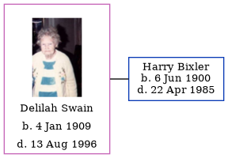

Delilah Emily Bixler (née Swain) 1909 - 1996
[ Home ] | [ Calendar ] | [ Surnames Index ] | [ Family History ]Delilah Swain, the wife of Harry Emerson Bixler (the fourth cousin twice-removed on the mother's side of Nigel Horne), was born in Allen, Indiana, USA on Jan 4, 1909<span class="citation">1,2,3,4</span>. She married Harry in Fort Wayne, Indiana in 1946<span class="citation">5</span>, which is also where she died on Aug 13, 1996<span class="citation">1,2,4</span>.
Citations
- Social Security Death Index - Findmypast
- United States Billion Graves index - Findmypast
- United States Marriages - Findmypast
- United States Obituary Notices - Findmypast
- United States Marriages - Findmypast
Media
Delilah Emily Swain
Social Security Death Index - USBMD/SSDI/313148372
United States Obituary Notices - US/TRIB/035848870
United States Billion Graves index - US/BMD/BILLION/5/000028368963
Family Tree
Generated by Ged2Site. Last updated on Jul 20, 2025